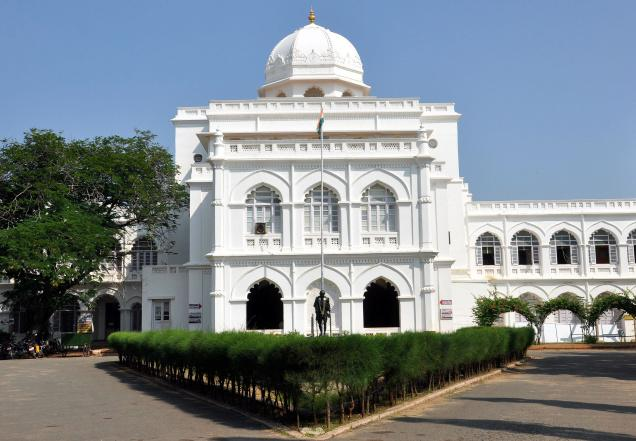

A museum dedicated to Mahatma Gandhi, housed in the historic Tamukkam Palace.
Rare photographs, letters, and personal items of Gandhi, including a piece of the blood‑stained cloth from his assassination.
It’s one of the five Gandhi museums in India, offering deep insights into India’s freedom struggle.